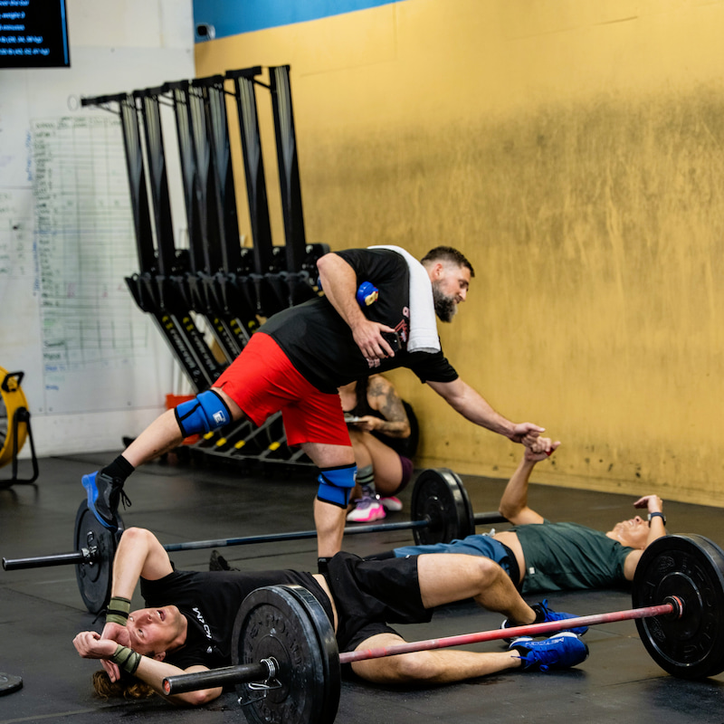
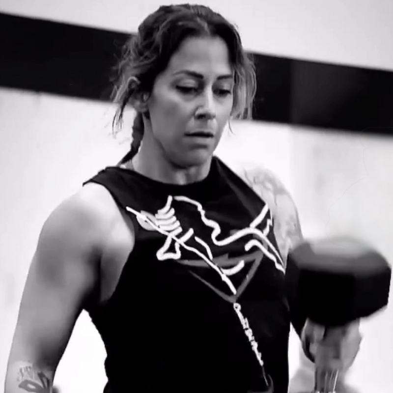
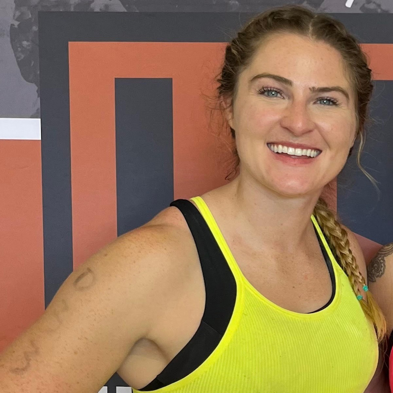
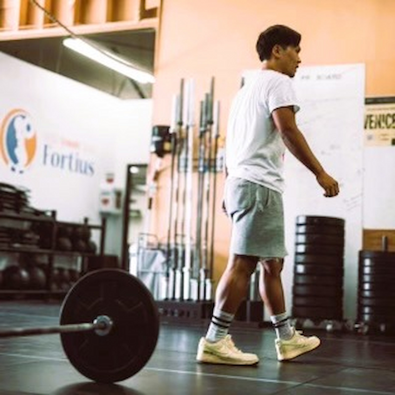

Hi, I'm Suellen, originally from Brazil and currently based in San Diego. I hold a degree in Psychology and have always been passionate about helping people grow, both mentally and physically.
I started practicing CrossFit in 2019 and began coaching in 2024. What started as a personal fitness journey quickly became a passion for coaching and helping others discover their own strength and confidence.
My goal as a coach is to create a positive, supportive, and motivating environment where athletes of all levels can improve their fitness, build healthy habits, and enjoy the process. I believe fitness should enhance your quality of life, not just your performance in the gym.
Outside of coaching, I am continuing my education as a Personal Trainer and working toward combining my backgrounds in psychology and fitness to help people achieve long-term physical and mental well-being.

I always enjoyed sports, physical activity, and competing. Growing up, I participated in football, soccer, basketball, and wrestling. I never enjoyed weightlifting or conventional gym-based workouts, choosing to stay fit through sports instead. CrossFit showed me that weightlifting and working out in the gym could be just as fun and rewarding as the sports I had played my whole life.
I am a 20+ year US Army veteran. During four years in Army recruiting I gained weight, and when I was deployed to Iraq I needed to improve my fitness but found traditional gym routines uninspiring. Another soldier invited me to do CrossFit. I had never heard of it, but I was willing to do anything that was not traditional Army gym activities. After the first few days, I knew I would be doing CrossFit for the rest of my life.
I really enjoy coaching and seeing someone achieve something they did not know they were capable of. Everyone has different skills, abilities, and goals. It is fun to observe and participate in so many different individuals' fitness journeys.

Hey squad! I've been involved in CrossFit since 2016 and coaching since 2022. My passion for coaching took shape during the pandemic, when I began creating weekly workouts and providing mindset support to help colleagues stay active, focused, and resilient during a challenging time. Seeing the impact fitness could have on both physical and mental well-being inspired me to turn that passion into a coaching career.
As a coach, my goal is to make every class the best hour of your day! I emphasize movement quality, technical development, and weightlifting fundamentals while tailoring my coaching to each athlete's individual needs and experience level. I believe effective coaching goes beyond leading a class: it's about creating meaningful athlete connections, delivering personalized feedback, and giving each member something valuable to build on every time they train.
My B.A. in Business Management combined with CrossFit L-2 and USA Weightlifting L-1 has strengthened my ability to lead structured, purposeful classes while delivering thoughtful, high-quality coaching that helps athletes move with confidence, train with intention, and continue progressing over time.

I grew up playing competitive soccer and running track and cross country. When I got to college, all of a sudden I had no practice and nothing competitive to train for. That is when I found CrossFit in 2014 and it perfectly filled the competitive and training void I was looking for. I have been doing CrossFit for nearly 10 years now and started as a complete beginner. I had a good aerobic base from my years as a runner, but everything else I had to learn from scratch. There was not a single gymnastic skill or lift that came easy to me. I had terrible mobility, especially in my shoulders, and it took me a few years before I could even overhead squat a barbell. I loved the challenge of it all, and a few years in I started competing regularly in local competitions which was so much fun. Throughout the years I continued to take classes, put in a lot of extra work outside of class, switched over to doing more competition-focused training, and have now worked my way up to competing on a Semifinals team in 2023 for Fortius, a goal that was 10 years in the making.
I have always tried to challenge myself to do hard things, in school, athletics, and life. One of the hardest life experiences for me was my first job out of school working on a Wall Street trading desk doing New York Market hours on the West Coast (on the desk at 6 am every morning, usually out of the office around 6pm). It was a tough environment and I was thrown into the fire from day one. Working in an intense place like that molded me into the person I am today, and really set me up to have the amazing (and much more flexible/enjoyable!) career I have now. Because I pushed myself so hard at that job and was faced with so many difficult situations, I truly feel like I can handle anything that comes my way. You have to do tough things to prove to yourself what you are capable of. That translates so well to CrossFit because every training session is hard in its own way, and you build that mental toughness every time you show up to train. I credit CrossFit a lot for helping me build a strong mental toughness to tackle all the hard challenges life throws at us and seeing how showing up and giving your full effort leads to the best rewards.
I love sharing all the knowledge I have gained from my 10-year-long CrossFit journey. I started as a real beginner, so I know what it is like when the movements are really difficult and when it feels like you will never be able to do certain things. I can't wait to share progressions, tips, and encouragement with everyone who takes my classes. I truly believe (because I have experienced it myself) that nothing is impossible for anyone who shows up consistently and puts in the work. I am excited to help people reach whatever goals they have in the gym!
Growing up I played softball and soccer. When I started playing competitive softball, I quit soccer so I could focus all of my attention on softball. I ended up getting a scholarship to Humboldt State University for softball. Throughout my softball journey, I also became interested in strength and conditioning. I got my degree in Kinesiology in 2019. In the fall of 2019, I took an internship at the University of Tennessee in Knoxville, Tennessee with their strength and conditioning program. Here, I assisted the head strength coaches with their programs and lifting groups. I had the incredible opportunity to work with multiple different athletes and sports. In 2020 I accepted a position as a graduate assistant at San Jose State University. I was given the opportunity to coach in the strength and conditioning department for teams such as softball, women's golf, and cross country. I earned my master's degree in exercise physiology in the spring of 2022. Throughout these competitive and difficult journeys, I learned that quitting and self-doubt are never options. The stressful and difficult situations that I have been placed under have shaped me as a coach today. Understanding the human body, mentally and physically, has been a joy to learn about. There is nothing I desire more than bettering people's lives.
My worst enemy is what has also become one of my strengths. Internal self-doubt has been my weakness for as long as I can remember. This has also driven me to pursue passions and accomplishments that I did not think I was capable of. There was a time when I did not think I was smart enough to pursue a master's program. After I received my acceptance letter to San Jose State, something clicked and I was more motivated than anything to succeed in school. I put my fears aside and pushed myself harder in school than I ever have before. In May of 2022, I graduated with honors from my master's program. Since graduation, I have stepped out of the college realm and focused more on individual health and wellness. Fitness will always be my passion because it has taught me so much about myself and my strengths and weaknesses.
Coaching is an opportunity to help individuals who want to better their overall health and fitness. I enjoy having the ability and opportunity to help those who want to learn about fitness and conquer their weaknesses while enhancing their strengths. I keep myself motivated by participating in workouts that push me past my limits, observing and learning from others, and incorporating knowledge and skills from my past into my coaching today.

I have always wanted to stay active and healthy to keep up with my daughters, who play multiple club sports. For a long time, though, a hectic work schedule and lifestyle meant fitting in a workout just wasn't happening. Discovering CrossFit completely changed that and motivated me to dive headfirst into the training and the gym community. Now, I am in the best condition of my life since college. All my bloodwork comes out fine, and I can easily chase after our dog when they decide to run away! Ask me for the proof, and I will happily provide it.
When I turned 40, a few things hit me at once. My bloodwork was heading in the wrong direction, and I couldn't keep up with two teenage daughters playing sports at an elite level. Regular gym visits often just turned into Netflix binge-watching opportunities. While I walked a few miles here and there, it wasn't enough to stay truly fit. My very first CrossFit class was completely different. It was a true team effort. The coach and all the other members were right there to support me, and it made me want to push my limits. Simply put, I just had to show up to see the difference, and it only took a single month.
A CrossFit gym brings together people from all different backgrounds, but at its core, it is about competing against yourself, not anyone else. Ego shouldn't play a role in pushing past your capabilities. My goal is to ensure our members understand their limitations and strengths, enjoy subtle yet clear improvements every single time they walk through the door, and always prioritize safety first. I absolutely love seeing our members make consistent, healthy progress from taking our classes.